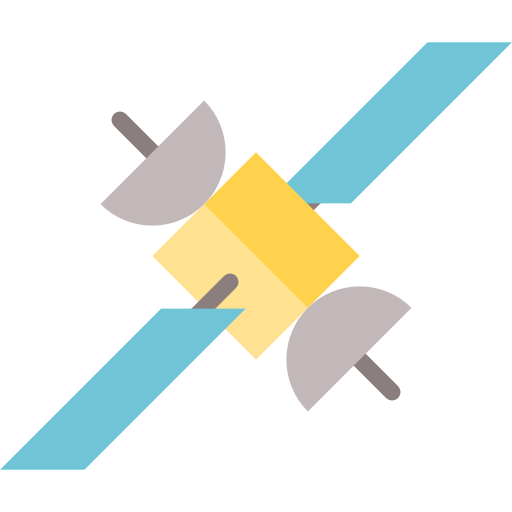

বঙ্গবন্ধু-১
বাংলাদেশের প্রথম স্যাটেলাইট (কৃত্রিম উপগ্রহ)
উৎক্ষেপণ সময়: ১১ মে, ২০১৮

উত্পাদক: Thales Alenia Space
চুক্তিকারী: স্পেসএক্স
বহনকারী রকেট: Falcon 9 Block 5
অবস্থান: ১১৯.১ ডিগ্রি পূর্ব দ্রাঘিমাংশে
মিশন সময়কাল: ১৫ বছর
প্রজেক্ট খরচ: তিন হাজার কোটি টাকা
মহাকাশে যাত্রার চূড়ান্ত ক্ষণে বাংলাদেশের প্রথম স্যাটেলাইট বঙ্গবন্ধু-১।
আজ বাংলাদেশ সময় দিবাগত রাত ২টা ১২ মিনিট থেকে ৪টা ২২ মিনিটের মধ্যে যেকোনো সময় স্যাটেলাইটটি উৎক্ষেপণ করা হতে পারে।
যুক্তরাষ্ট্রের ফ্লোরিডার কেনেডি স্পেস সেন্টার থেকে স্যাটেলাইটটি উৎক্ষেপণ করা হবে। উৎক্ষেপণ সফল হলে বিশ্বের ৫৭ তম দেশ হিসেবে নিজস্ব স্যাটেলাইটের মালিক হবে বাংলাদেশ। দেশের প্রত্যন্ত অঞ্চলে এই স্যাটেলাইটের মাধ্যমে ইন্টারনেট ও টেলিযোগাযোগ সেবার সম্প্রসারণ করা সম্ভব হবে। দুর্যোগ পরিস্থিতি মোকাবিলা ও ব্যবস্থাপনায় নতুন মাত্রা যোগ হবে। স্যাটেলাইটভিত্তিক টেলিভিশন সেবা ডিটিএইচ (ডিরেক্ট টু হোম) ও জাতীয় নিরাপত্তা নিশ্চিত করার কাজেও এ স্যাটেলাইটকে কাজে লাগানো যাবে। বঙ্গবন্ধু-১ স্যাটেলাইট উৎক্ষেপণের মুহূর্তটি বাংলাদেশ টেলিভিশনসহ দেশের সব কটি বেসরকারি টেলিভিশন সরাসরি সম্প্রচার করবে। দুর্লভ এ মুহূর্ত সরাসরি প্রচারের ব্যবস্থা নিতে মন্ত্রিপরিষদ বিভাগ দেশের সব জেলা ও উপজেলা প্রশাসনকে নির্দেশ দিয়েছে। বঙ্গবন্ধু স্যাটেলাইট উৎক্ষেপণকারী প্রতিষ্ঠান স্পেসএক্সও উৎক্ষেপণ মুহূর্তটি সরাসরি সম্প্রচার করবে। কেনেডি স্পেস সেন্টারের দুটি স্থান থেকে আগ্রহী দর্শনার্থীরা এই উৎক্ষেপণ দেখতে পারবেন। একটি স্থান অ্যাপোলো সেন্টার, উৎক্ষেপণস্থল থেকে দূরত্ব ৬ দশমিক ২৭ কিলোমিটার। উৎক্ষেপণের দৃশ্য কেনেডি স্পেস সেন্টারের মূল দর্শনার্থী ভবন (মেইন ভিসিটর কমপ্লেক্স) থেকেও দেখা যাবে। উৎক্ষেপণ স্থল থেকে এটির দূরত্ব ১২ কিলোমিটার।
স্যাটেলাইট উৎক্ষেপণের এ মুহূর্তের সাক্ষী হতে প্রধানমন্ত্রীর তথ্যপ্রযুক্তি উপদেষ্টা সজীব ওয়াজেদ জয়ের নেতৃত্ব একটি প্রতিনিধিদল কেনেডি স্পেস সেন্টারে উপস্থিত থাকবে। মহাকাশে বঙ্গবন্ধু-১ স্যাটেলাইটের অবস্থান হবে ১১৯ দশমিক ১ ডিগ্রি পূর্ব দ্রাঘিমাংশে। এই কক্ষপথ থেকে বাংলাদেশ ছাড়াও সার্কভুক্ত সব দেশ, ইন্দোনেশিয়া, ফিলিপাইন, মিয়ানমার, তাজিকিস্তান, কিরগিজস্তান, উজবেকিস্তান, তুর্কমেনিস্তান ও কাজাখস্তানের কিছু অংশ এই স্যাটেলাইটের আওতায় আসবে। দেশের প্রথম এ স্যাটেলাইট তৈরিতে খরচ ধরা হয় ২ হাজার ৯৬৭ কোটি টাকা। এর মধ্যে ১ হাজার ৩১৫ কোটি টাকা বাংলাদেশ সরকার ও বাকি ১ হাজার ৬৫২ কোটি টাকা ঋণ হিসেবে নেওয়া হয়েছে। এ ঋণ দিয়েছে বহুজাতিক ব্যাংক এইচএসবিসি। তবে শেষ পর্যন্ত প্রকল্পটি বাস্তবায়নে খরচ হয়েছে ২ হাজার ৭৬৫ কোটি টাকা। স্যাটেলাইট তৈরির এই পুরো কর্মযজ্ঞ বাস্তবায়িত হয়েছে বাংলাদেশ টেলিযোগাযোগ নিয়ন্ত্রণ কমিশনের (বিটিআরসি) তত্ত্বাবধানে। তিনটি ধাপে এই কাজ হয়েছে। এগুলো হলো স্যাটেলাইটের মূল কাঠামো তৈরি, স্যাটেলাইট উৎক্ষেপণ ও ভূমি থেকে নিয়ন্ত্রণের জন্য গ্রাউন্ড স্টেশন তৈরি। বঙ্গবন্ধু-১ স্যাটেলাইটের মূল অবকাঠামো তৈরি করেছে ফ্রান্সের মহাকাশ সংস্থা থ্যালেস অ্যালেনিয়া স্পেস।
স্যাটেলাইট তৈরির কাজ শেষে গত ৩০ মার্চ এটি উৎক্ষেপণের জন্য যুক্তরাষ্ট্রের ফ্লোরিডায় পাঠানো হয়। সেখানে আরেক মহাকাশ গবেষণা সংস্থা স্পেসএক্সের ‘ফ্যালকন-৯’ রকেটে করে স্যাটেলাইটটি আজ মহাকাশে যেতে পারে। স্যাটেলাইট তৈরি এবং ওড়ানোর কাজটি বিদেশে হলেও এটি নিয়ন্ত্রণ করা হবে বাংলাদেশ থেকেই। এ জন্য গাজীপুরের জয়দেবপুরে তৈরি গ্রাউন্ড কনট্রোল স্টেশন (ভূমি থেকে নিয়ন্ত্রণব্যবস্থা) স্যাটেলাইট নিয়ন্ত্রণের মূল কেন্দ্র হিসেবে কাজ করবে। আর বিকল্প হিসেবে ব্যবহার করা হবে রাঙামাটির বেতবুনিয়া গ্রাউন্ড স্টেশন। শুরুর ইতিহাস বাংলাদেশে প্রথম স্যাটেলাইট নিয়ে কাজ শুরু হয় ২০০৭ সালে। সে সময় মহাকাশের ১০২ ডিগ্রি পূর্ব দ্রাঘিমাংশে কক্ষপথ বরাদ্দ চেয়ে জাতিসংঘের অধীন সংস্থা আন্তর্জাতিক টেলিযোগাযোগ ইউনিয়নে (আইটিইউ) আবেদন করে বাংলাদেশ। কিন্তু বাংলাদেশের ওই আবেদনের ওপর ২০টি দেশ আপত্তি জানায়। এই আপত্তির বিষয়টি এখনো সমাধান হয়নি। এরপর ২০১৩ সালে রাশিয়ার ইন্টারস্পুটনিকের কাছ থেকে বঙ্গবন্ধু-১ স্যাটেলাইটের বর্তমান কক্ষপথটি কেনা হয়। বাংলাদেশ বারবার আইটিইউর কাউন্সিল সদস্য নির্বাচিত হয়ে নীতিনির্ধারক পর্যায়ে থাকলেও এখন পর্যন্ত নিজস্ব কক্ষপথ আনতে পারেনি।
জাতিসংঘের মহাকাশবিষয়ক সংস্থা ইউনাইটেড নেশনস অফিস ফর আউটার স্পেস অ্যাফেয়ার্সের (ইউএনওওএসএ) হিসাবে, ২০১৭ সাল পর্যন্ত মহাকাশে স্যাটেলাইটের সংখ্যা ৪ হাজার ৬৩৫। প্রতিবছরই স্যাটেলাইটের এ সংখ্যা ৮ থেকে ১০ শতাংশ হারে বাড়ছে। এসব স্যাটেলাইটের কাজের ধরনও একেক রকমের। বঙ্গবন্ধু-১ স্যাটেলাইটটি বিভিন্ন ধরনের মহাকাশ যোগাযোগের কাজে ব্যবহার করা হবে। এ ধরনের স্যাটেলাইটকে বলা হয় ‘জিওস্টেশনারি কমিউনিকেশন স্যাটেলাইট’।
পৃথিবীর ঘূর্ণনের সঙ্গে সঙ্গে এ স্যাটেলাইট মহাকাশে ঘুরতে থাকে। দেশের প্রথম ন্যানো স্যাটেলাইট ব্র্যাক অন্বেষা প্রকল্পের প্রিন্সিপাল ইনভেস্টিগেটর খলিলুর রহমান বলেন, ‘আমাদের ছেলে-মেয়েরা এখন নিজেরাই স্যাটেলাইট বানানোর দক্ষতা অর্জন করেছে। সরকারের সহযোগিতা পেলে ২০২১ সালের মধ্যে দেশেই নিজস্ব যোগাযোগ স্যাটেলাইট তৈরি করা সম্ভব। বঙ্গবন্ধু স্যাটেলাইট তৈরি না হলে এসবের কিছুই হতো না।’ বর্তমানে দেশে প্রায় ৩০টি স্যাটেলাইট টেলিভিশন চ্যানেল সম্প্রচারে আছে। এসব চ্যানেল সিঙ্গাপুরসহ বিশ্বের বিভিন্ন দেশ থেকে স্যাটেলাইট ভাড়া নিয়ে পরিচালিত হচ্ছে। সব মিলিয়ে স্যাটেলাইটের ভাড়া বাবদ বছরে চ্যানেলগুলোর খরচ হয় ২০ লাখ ডলার বা প্রায় ১৭ কোটি টাকা। বঙ্গবন্ধু স্যাটেলাইট চালু হলে এই স্যাটেলাইট ভাড়ার অর্থ দেশেই থেকে যাবে। আবার স্যাটেলাইটের ট্রান্সপন্ডার বা সক্ষমতা অন্য দেশের কাছে ভাড়া দিয়েও বৈদেশিক মুদ্রা আয় করার সুযোগ থাকবে। এই স্যাটেলাইটের ৪০টি ট্রান্সপন্ডারের মধ্যে ২০টি ভাড়া দেওয়ার জন্য রাখা হবে। মহাকাশে যে কক্ষপথে বঙ্গবন্ধু স্যাটেলাইট স্থাপন করা হবে, তা দেশের টেলিভিশন চ্যানেলগুলোর জন্য ব্যবহার করা কঠিন হবে বলে মনে করেন বেসরকারি টেলিভিশন চ্যানেল একাত্তর টিভির ব্যবস্থাপনা পরিচালক ও প্রধান সম্পাদক মোজাম্মেল বাবু। তিনি প্রথম আলোকে বলেন, বঙ্গবন্ধু স্যাটেলাইট মহাকাশের যেখানে স্থাপন করা হবে, তা দিয়ে কাজ করা বাংলাদেশের টেলিভিশনগুলোর জন্য হবে একটি চ্যালেঞ্জ।
টেলিভিশন চ্যানেলগুলো যাতে এ স্যাটেলাইটের সুবিধা পায়, সে জন্য যা দরকার তা করতে হবে। এ বিষয়ে বিটিআরসির চেয়ারম্যান শাহজাহান মাহমুদ গত সোমবার যুক্তরাষ্ট্রে যাওয়ার আগে প্রথম আলোকে বলেন, বঙ্গবন্ধু স্যাটেলাইট ব্যবহারে দেশীয় চ্যানেলগুলোর কোনো সমস্যা হলে তা সমাধান করা হবে। বিটিআরসি নতুন প্রযুক্তির প্রতি খুবই উদার। এ বিষয়ে ব্যবহারকারীদের যেকোনো প্রস্তাব বিবেচনা করা হবে। তিনি আরও বলেন, আবহাওয়া ঠিক থাকলে স্যাটেলাইটটি আজ রাতের নির্ধারিত সময়েই উৎক্ষেপণ হবে।
___প্রথম আলো